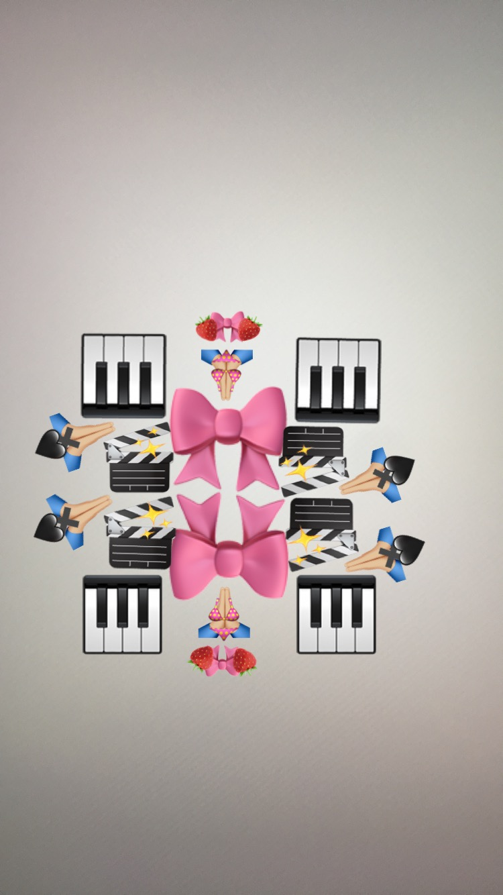
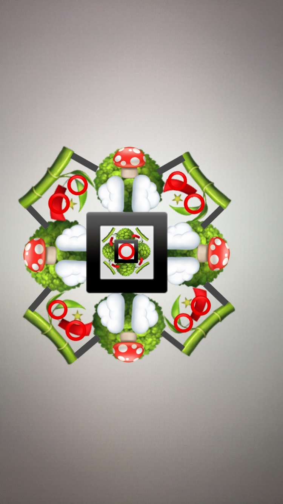
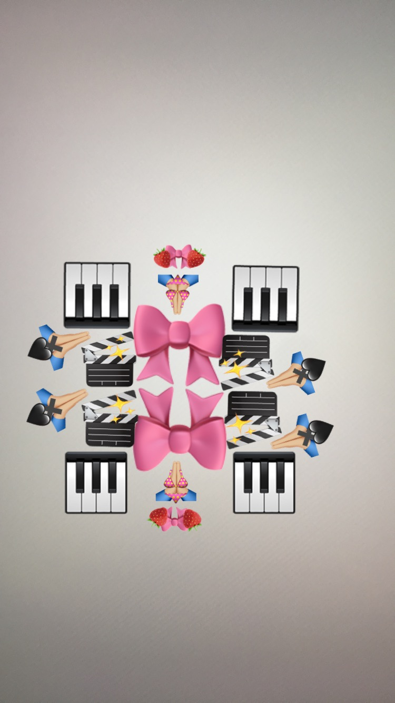
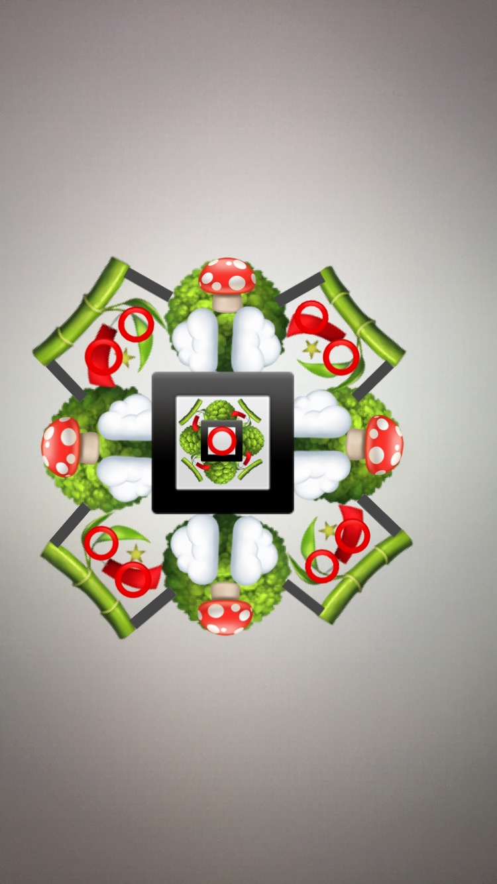

I believe some words are necessary about the discovery and possible meanings of this strange thing called The Alphamiricon. To bring it before the reader without explanation would be to coerce the alien tongue to speak a new language without knowing the first thing about it, and thus would be unfair to both reader and language. I can, however, provide no Rosetta Stone, but only the history of my own engagements, and those of the others.My interest in things of this sort began early, but it wasn't until I was thirty, such a long time ago now, that the first element came into my possession. I'd of course passed it off as inscrutable, fascinating, but inscrutable, perhaps a practical joke some acquaintance might give him- or herself away about in the near future. But that did not happen. I forgot about it. Months later, in my study, I'd been dreaming, perhaps of my wife, Grace; a whole day whirled past in a winking, as time in the daydream does. I rubbed my eyes, my glasses beside me on the desk. As the sun set the square of light rising upwards along the white wall was almost gold, there was so much red in it, and was stratified, because of the poorly made glass in the window, like the Olduvai Gorge, and I suddenly found myself thinking of this thing, this cryptogram, and wondered who, or what it might signify; from whom, or where it had come. I drew it from the desk drawer I'd shoved it in. Again the black configurations seemed to draw me, seemed to ask a silent question. Possibly I had even made the thing myself in one of those periods, those blank times through which I frequently pass, and of which I remember nothing. There are whole days that disappear, and people. Like peering into dark water, the deep water of a well, which absorbs all light and refuses any reflection. Nothing seems to escape, not even, therefore, this sign. The paper it was imprinted, impressed upon, for so it was, seemed brittle, truly ancient. Perhaps it was some artefact that had fallen into my hands, indeed, an antique symbol. Therefore, I decided to begin by trying to ascertain its age. I might have something rare, even valuable in my possession. Thus my life-long search was initiated.As it turned out, it was only sixteenth century, probably German. The age and composition of the ink, the method of printing, as well as the nature and ratio of the paper's ingredients contributed to this estimation. But while this analysis was being conducted, I noticed that the sign itself was composed of what appeared to be letters of the Roman alphabet. Could this, then, have been some Renaissance alchemical or memory symbol?
I haunted libraries, leafing through old alchemical texts, secret, or what once were secret, but are now simply obscure grimmoires. The diagrams were marvellous, however: their green and red dragons, their men and women in bottles, their mysterious inscriptions and signs, their wheels of the heavens. So it was that I'd really begun to study hermeticism, perhaps even learn something about the event of God in the world the adepts had meant, and meant to reveal, in all their weird secrecy. Even the nubbly texture of the old pages, handmade by the special guilds, introduced me to a careful knowledge well guarded, and seemed to conjure up the old magic from the alembic, but also the secrets of the new paper-making and printing magics, the very actions of the alchemist, the printer composing at the chase, the artisan at his mould and deckle. Emblems such as those of the process of multiplying the powder of transmutation, and those in which the alchemical work is likened to the Creation were particularly striking in their similarity to my sign, but, nonetheless, I could not find it in any of the tomes I explored. Because memory in the Renaissance was also conceived of as an hermetic art, I began to check systematically through these possible sources as well. Again, there were similarities, especially in Ramon Lull's Ars Brevis, where the Combinatory Figures and the Memory Wheels seemed alternatives, or variations of my figure, but nothing precise. They all made use of Roman and Hebrew letters, but not in the same manner. I was studying the ancient texts in the library of Oraklenstadt,1 in fact, the De Signorum et Sigillorum Dei (1586). The book is huge, about the size of an old pulpit Bible, and can only be opened on a table in a specially designed room that controls light and moisture. I fidgeted with my pencil, the small beard I'd been trying to grow, the rather ragged cuffs of my shirt (trying to hide them under my coat sleeves), until finally the woman, who refused help (it was against the rules), struggling with the thing like an overloaded suitcase, pushed it before me onto the table. Its smell was indescribable: rich, profound, pungent, dark. I opened to a series of emblems. Between the pages, loosely, like a leaf torn from some other small text, was the second of my cryptograms. I recognized it right away. Incredible, I thought. This one, on mulberry paper, the printing process wood block, and its age somewhere around the first century, confirmed an oriental origination. No one else was using fibre paper at that time. The big question, of course, was, if it were made in the East, why out of Roman letters? There is scarcely anything even remotely similar in Oriental alphabets. The Chinese and Japanese ideogram may, I speculated, be expressively like it, but as far as form is concerned, despite the complexity, it is of an entirely different character. It wasn't until leafing through Oriental texts, and texts concerning the Orient, almost at random, and with a certain desperation, that I stumbled upon the extravagant and powerful shapes of the Mandala. Each line a dark journey, an emigration, a passage of a god, or of a demon, like the tail of some supernatural comet through the negative space of meditation. The energy pours from the centre, but returns, is always recreating itself beyond the level of the rational mind. Each mandala is an attempt to close down the paradoxical factories of reason, short circuit its imprisoning taxonomies which are never experience, but only experience of experience. Each mandala is a method or pattern of being directly, a preparation for truth. Becoming what we already are.2 But further, I discovered, there is the mandala as yantra. The yantra is the visual map, the choreography (with the muse in it) of the mantra. The mantra is the name, repeated: the sacrifice (sacer, facere) of the name, that alters the awareness of the person who wears it, or so they say. It is a verbal breathing, or the dance of it all. The yantra is the shape of the mantric song: All things...are aggregations of atoms that dance, and by their movements produce sounds. When the rhythm of the dance changes, the sound it produces also changes.... Each atom perpetually sings its song, and the sound, at every moment, creates dense and subtle forms.3 They say all things visible and invisible originate in the speaking of the Word. Could these calligrams be, likewise, maps of sound? Now, it appeared that the meanings of the mandala in the East, and those of the memory wheels and alchemical symbols in the West overlapped with the notion of the spiritual or psychic map, whether for meditative or active purposes. The problem was, exactly how were the intersections here, and between my mandalagrams to be established? What was the connection between a first century Tibetan emblem and a sixteenth century German one? Because both signs were similar to what had already been established in the separate cultures, and because of the Roman initials which seemed to construct the figures, I speculated that Europe or North Africa was the place of origin, and that the cryptograms or mandalas I had in my possession were late and altered copies of some earlier originals. I couldn't see, however, how the necessarily older originals could be older than the Latin alphabet, which arose, presumably, from West Semitic, via Greek, and perhaps can be traced back to Egyptian hieroglyphic. It wasn't until I'd discovered the fifth of these signs that it suddenly occurred to me that Semitic, Haptic and Latin, and all their derivatives were perhaps themselves derived from something much earlier and heretofore unknown. Perhaps I was looking at some very, very old alphabet. It was at this point that I founded my alphabetology: the logic (and, of course, word) of the letter and of its formation. It seemed, then, that the figures of B, E, J, K, and N in particular were the foundation, not of Oriental alphabets, such as demotic Egyptian and Arabic, with their sensuous curves, but rather of the mandala itself, the place of the focus of spiritual energy in a human being and, simultaneously, in the universe; the place where discursive thought had no place. We had to be talking about a time that antedated Sumer, probably before eight thousand BCE. Historically, pictograms were gradually abandoned, and their simplified progeny came into use (with Babylonian, for instance,) so that accounts and records could be made quickly and plainly. Either no such records were needed in the culture of the people who used these letters, they used other methods for mundane or discursive matters, or time was of no significance to them. Eschener4 speculates that the Natural Language, the language of God and the first children would, of course, be without time, be, in fact, timeless, as time did not enter the world until after the Fall. Is it possible I had found a fragment of Eden? What forgotten powers reside in these lines? The thought frightened me. The whole future of the world could be locked within their kaleidoscopic configurations. What will we see if we peer into them? What will be we able to say? Perhaps what is even stranger: the prevalence of Latin letters in these hierograms is, therefore, an eerie foreshadowing of the fragments which become the Roman alphabet, for it seems implausible the Romans would have had access to these figures directly, especially as a whole. Therefore, what we see as the obvious derivation of some Latin letters from the Greek, and of the Greek from the West Semitic, and so forth, if true, becomes a reversal in time. The letters, though deriving forward in history, are deriving toward their origin. Are we travelling, evolving, into the past? If progressive derivation is construed as a motion toward completeness, will these hierograms be our future alphabet: halephomicron, mirror, place of universal mind? Already a great silence pools in them. They flicker in lines of fate that suddenly cut through my thoughts. They sow their signs and wait. The reader may smile, but should not doubt my word that here I thought I had the solution to the aggrieved, confused, and vicious nature of our times in which governments make nothing and unions demand half of it, in which chosen peoples repeat history consciously and zealously, in which eighteen millions of dollars is allotted for sports arenas and none for knowledge; that here a hot, pacific, and heraldic power flooded into me, through me, through my whole body, when I gazed upon certain of these seals. What could it be? My little memory disturbances, those blank periods, in which my whole consciousness seemed to be swallowed up, were, however, gradually increasing in frequency as I spent more and more time on this alphabetology. I was no longer a young man, my beard was greying; I'd forsaken a career in the universities to pursue this rather eccentric, if not really aberrant passion. My life was lived in archives, libraries, museums, ruins. Like Hawthorne in his Custom's House, I was beginning to believe I was a citizen of somewhere else. My dream of famous discovery, freeing humanity lumbered with false knowledge, my name associated with a new and important redistribution of understanding in science, even that the diaries and reminiscences of discovery would, for their personal revelation, be one day published, shimmered like some landscape in the weaving distortion of heat waves, like the vision of a drunk. I, by this time, had perforce, become a traveller, a sort of sleuth, seeking any clue or hint of this new and yet ancient alphabet; one who paid his hotel bills by writing small articles for small magazines, and who taught from time to time (despite his promises to himself), giving lectures in language, literature, history, alchemy, archaeology; who conducted seminars for the idle, and published maps, always with the greatest hopes, of newly uncovered ancient cities; one who thought about theft, and borrowed often; that is, in short, one who was doing what was really of no advantage or delight to anybody whatsoever.
Let me mention how things had progressed to this state. Almost like Bedouin, my family, when I was young, had been nomadic, moving from city to city, dragging me with them, never being able to grow roots, never giving them the necessary time to strike down into the soil, but always opening new horizons, like suitcases, that later would shut again, and that always would contain only what was carried. Naturally, they wanted success for me and tried good naturedly to understand what it was I was doing, but always, I suspect in part because of the lack of immediate and tangible results, they remained unconvinced and vaguely reproving. What would a new alphabet mean to those who hardly read the newspapers? This forced me to work all the harder, isolated me even further from what might be called a normal existence. Worst of all, Grace left me. I suppose it was inevitable: my interest and time were directed elsewhere, and my attentions were so few and awkward (and the fewer they were, the more awkward). I was hardly aware of it, of course, until it was too late. Now my love for her, despite its impotence, hovers like a ridiculous ghost. Then, like the desert for the nomads, these talismans, these stigma became my home. I had had a message from another world, another time, and took it up now with a vengeance. A few strange letters had played upon me, and opened out a golden track. Or was it that land to which Geoffrey Firmin journeyed, and from which he could not return? Nevertheless, just as there was that gulf for the Consul, so there must have been for these, my mandalagrams. There must have been a long, a deep hiatus between the culture that produced these signs which so fascinated me, at once concrete and abstract, between these talismans of complex energies and whatever picture writing we are familiar with, such as Egyptian or Sumerian or Chinese. For early pictographs, hieroglyphic or otherwise, were always pictures of something; a sunrise, a woman, a wine jar, a bird, or what have you; that is, they were not abstract. It is only in more recent times that alphabets have become so. Thus it is I presume these devices to be highly advanced creations issuing from some lost culture, most certainly Mediterranean, whose level of achievement was astonishing, and whose contact with history, even with the historians of five thousand BCE, never came about. It was certainly strange, therefore, to find that for physicists, biologists, and crystologists these signs are representative. Perhaps it is conceivable that the partially lost and ancient arts of alchemy and meditation might see these concrete abstractions as full of reference, but that modern science would see them as specifically symbolic is amazing, if not marvellous; it casts a new light on the advanced nature of the culture that produced them. The letters' concreteness lies, therefore, not simply in that alphabetological Ding-an- sich quality of an unknown language, but in patterns, if not necessarily discoverable in the world, for who can say where particle physics takes place, then certainly discoverable in the mind. Physicists with whom I have corresponded suggest that the letters resemble the Feynman vacuum diagrams of the virtual interactions of elementary particles, in which for a very short time, every physical process can proceed in ways which defy the laws of nature known today, always under the cloak of the principle of uncertainty. When any physical process creates itself, it sends out feelers in all directions, in which time may be reversed, antiparticles created, unexpected things induced, because the system tends to make transitions in all directions at once.5 Like systems on the edge of state transformation in chaos theory. They also say many of them seem based on the symmetrical diagrams of the meson octet and the baryon decuplet. I myself do not understand these things. Biochemists6 suggest that perhaps this alphabet is a series of RNA and DNA protein models, and this seems at least philosophically appropriate when we remember their resemblance to the hermetic memory wheels of the fifteenth and sixteenth centuries. Perhaps the most obvious relation of the letters to modern science is in the field of crystology; some of them seem to have grown exactly as crystals, but crystals which are, however, as yet unknown. Symmetry plays a large part in the Alphamiricon, as it does both in these sciences and in the mandalas of meditation. However, some of the letters, such as I, seem to purposely eschew an absolute symmetry, as the birds or Vs on the arms of the figure do not correspond exactly. Symmetry, of course, is an image or idea of completeness, fullness, perfection, balance; what, in part, a Mozart sonata is all about. Asymmetry, however, is not necessarily imperfection, but rather identity, exploration, difference, and may be hiding symmetries across different scales. How is it a culture encouraging both unity and identity, the most advanced magic and the most advanced science could allow itself to be destroyed, sometimes only fragments of its alphabet, and almost nothing else, discoverable to us? I believe, though it conjures up ghosts of the Hebrew, that what I consider to be the H is such a fragment. Compare it to its most similar fellows: the G and the L. Compare these to E, X, or D. Notice also C, A, Z. I believe we have at least two means of accounting for some of the differences in technique. One is authenticity. How truthful are these letters to the originals? Could copyists in our own history have altered them? Could destruction have done so? Both are possible. Secondly, and perhaps more interestingly, we can hypothesize the creation of the Alphamiricon at different points, not of time necessarily, but of states of consciousness. Such letters as G and L, for instance, appear more primitive. Both are mazes of a sort. Pondering these two letters, I seemed to remember, as if suddenly, the large garden we once had had when I was a child that was designed to be both art and entertainment, but which for me was especially fearful. Flowers of every hue and shape, snap dragons with their pollen purses, gladioli on stalks taller than I was, dahlias, rose trees, but particularly the labyrinth of boxwood hedges, eight feet high, that wound and snaked and cut back upon itself, so that if you stood on the porch you could peer down at where you'd been lost and terrified the evening before; father pointing out the entrances and exits you'd failed, in the closeness of the dusk, to recognize; the sun burning shadows off now like a mist, casting an incomprehensible innocence over the green corners that had closed and opened and opened and closed on my fear like a huge Book of the Dead the night before. And the girl in the yellow dress who appeared there when she was supposed to be on a southern vacation with her parents. One can only speculate what the maze might have meant to the people of the Alphamiricon. It goes without saying that it is, anyhow, an image of self-enclosure, but perhaps as a map rather than as a prison, in the way that looking down on the labyrinth in our garden was an opening to its secrets, and to my own fears.
Years later, in the archive of Ebla (at least I believe it was there), a strange incident occurred. A shaft of sunlight dropped through the window, filtered to the floor in the mote- laden air as if through water, and everything slowed down, seemed to move in slow motion. An ocean of time rolled out before me. The spines took on a peculiar quality of simultaneous secrecy and openness, as if everyone who had read, or not read them, had left something of his or her presence or absence, clues as to how to decipher them, in, on and round them, a patina of possibility. The next thing I knew, I was famished. I was afraid to look at my watch. The room itself was somehow different. When I got outside, I failed to recognize the city. Not long afterward, I began seeing the letters in my mind as if they were burned there like brands; brightly they hovered in a dark cloud. My tongue tried to form them, my throat, and larynx and lungs to give them aural shape. I thought, to describe it, of the most impossible things: the cry of, melody of birds, the cicada's drill, an alligator's yawn, an over-ripe fruit struck by a hammer, a dental patient, the rumble, groan, the shrill and eerie plunge of the song of the humpback whale. But that was all poetry. It was as if I were speaking, sounding through another medium. I didn't understand what had moved through me. I made an entry in my diary, all this is coming from diaries I wrote at the time, trying to come to terms with things, I made an entry from Boehme, which corresponds remarkably with what I had learned about the yantra, but adds thereto: The seventh form (of eternal nature) is...where the sound of the speaking word embodies itself in being.... This seventh form is a comprehensibility of all the qualities, and is properly called the whole of nature, or the formed, expressed Word. It is the inner, divine, uncreated heaven...as a growing life.7 Extracting this relatively clear passage from the mystic's rather hyperbolic and cryptic writings was by no means easy. Even here the paradox of the "formed" and "uncreated" Word is a bit of rhetorical melodrama that hides rather than reveals the master's profound understanding of the energies that feed our material world. It seems he was unable to distance himself sufficiently from his own insight so that he could systematize it. His world is wonderfully metaphoric, and hence really clandestine. The figure of the "growing life," for instance. All the while I'd been writing this out, I'd been, strangely, thinking of my sister; her growing, and ungrowing. And, as it turned out, this gratuitousness was not irrelevant. My sister took a boat cruise. The Caribbean had always fascinated her, its endless islands, the water as clear as a catatonic's eye, fish as bright as birds, places of pirates, the un- uncovered. When she was just a girl, yellow hair braided to her waist, she would draw and redraw maps, the S from the Keys to Port-of-Spain, Pointe-a-Pitre, Montserrat, Basseterre, Anegada, she knew all the names. Hunched and preoccupied with her crayons, the zippers of the rainbow, she gave every place its own colour, every beach its own hue, just as Rimbaud had done for the vowels. Carib, from the Spanish, Caribal, Canibal, and the language of those who live there. When she turned 18, she simply left for New York, leaving a note explaining her sudden action, her preparations, and when she would return. Only mother was upset -- 'How could a girl so young go on a boat trip like that, and to the Caribbean?" Father took off his glasses, said we would have to let her grow up her own way; she was already very independent, evidently: had saved, reserved her tickets; she would at any rate be back in a month. Mother cried regardless. She wore her green dress; it was one of those missing from her closet; undoubtedly she looked beautiful. Being a rather shy girl, she probably stuck to her room, or, when opposite Florida, to a chaise on deck, reading, where she could hear the wake. It was a lovely passage. The dining hall on board the liner seemed to be without walls because of a mass of potted palm trees, specially procured for this trip, that leaned and climbed toward the ceiling. Obviously a memento of destination. It was here she met Jonathan. He seemed to her to be some sprite come to the ship, for she never saw him with anyone, neither parents, nor relatives, nor friends, and he would appear at the oddest times. He had a dark tongue of hair across his forehead, and almost unnaturally bright and transparent eyes. He might have been 12 or 13. On the first occasion he brought her an arrow, the flights of which had dulled with age, but once were brilliant plumage. The bullet-like head was lashed with a tough twine to the wooden shaft. He watched her touch the wood, slide her fingers along its grain, lightly, like a caress. What should she do with this? He didn't answer, but observed her lips in their delicate movements. She said it was very beautiful (though she found its associations of ancient death, perhaps a little repugnant) and returned it to him. Watching her mouth as if mesmerized, he took the arrow, smiled broadly, wheeled around and left. Their meetings became more frequent. He brought oranges, and other bright fruit; enigmatic symbols he'd drawn; books with photographs of native masks from Africa, the Canadian West Coast, Central America, the Islands; moths that furl their front wings to look like thorns; desert beetles that once drank a bead of moisture rolling down their bodies from a Namibian sea-wind mist; a praying mantis from the Africa of the Baobab, the tree with its moon-opened blossoms pollinated by bats, a mantis who severs the head and limbs of her mate during copulation, and the inside of whose forearms spread to display beautiful iridescent green eyespots. And once, strangely, a series of pictures of the face of the developing foetus up to the sixtieth day. They looked with horror on the mask of this creature: the thirty-nine-day-old eyes, wide at the sides of the ancient folded head, the cheeks fused over the cleft lip, the amphibian nose; or the long futuristic forehead and the tiny death-like mouth of the fifty-nine-day-old creature. Slowly, he was teaching her how to speak his language. He took her hands, her long fingers, gave them expressions, configurations to attach to the world, by pointing to objects, shapes, words in the books; making faces; doing dances. He touched her carefully and strongly, knowing her beauty not simply delicate. She made signs in the air, a conductor of meanings. They conducted the palm trees in the wind, the hot air into their own significance. They grew like surds aboard the liner; silences pooled around them, issued from their pockets, from under their arms when they raised them like wings, from their eyes, pooled at their feet, radiated like radar -- they had had a special tour of the bridge –- from their mouths. Touch and vision; the world of the boat was a tactile silent film, an hallucinated floating island of intersecting planes, angles and curves. As if they were riding on a vowel, a word from the mouth of some angel, which, being their habitation, they could not hear, such as those of us who are earth-bound cannot hear the music the earth produces, nor that of the other spheres. The eye becomes a tactile projectile, roving over objects like a fingertip. The hand sees, and is seen seeing: this is how identity came into focus for them. For three nights running my sister had dreamed of those strange translucent amphibian heads of the foetus, their curled awkward bodies, like wasps, pupae of wasps. They fed on the mother, unspeakably. Piracy. But the mother has strength enough for two. Inside her the evolution of the species unfolds. Out of the past she bears the only future, totem of the other. It floats like an island in a warm sea. Its name is whatever she desires. Blood red light floods down from the red heart of a female sun, beautiful blood oranges. There are beaches of flesh. Basking. Jonathan, with graphic hands, described the significance of the arrow he'd shown my sister that first day. It was the symbol for him of a transgressed limit; it haunted him, and he celebrated it. One summer while holidaying with his parents in their rented cottage at Shadow Lake four or five years ago, he'd gotten up early and taken up his bow and the little quiver of arrows, and opened the screen door into the liquid blur of morning light that flooded trees out of his vision with its bright currents and undercurrents. No door closed behind him. He coasted up to the road shooting arrows into the thick air. They disappeared it seemed into the slow tunnels of their own motion. He found them again laying on the ground, fallen projectiles, harmless on the green, grey, or orange moss and lichen, the dead leaves. A large leopard frog leapt, with its legs behind like some stringed puppet, into his path, and sat there motionless. Where had he come from? He was too far from the water. What did he want here? Jonathan stood over him, looking. The first animal thing he'd seen that morning, nothing else stirred. He notched the arrow and drew it back to his cheek, as he'd been taught, his right arm straight. He sighted down the arrow at the frog's spotted back. He waited; the frog did not move, was either petrified, or stupid. Damn you. In Jonathan's chest, hatred, a quick fire, flared, died down. The arrow released, pinned the frog so suddenly the legs and arms shot out uselessly, then began to retreat like slow elastics. Also the tongue. The mouth was open, working slowly, but Jonathan could hear nothing. He thought the words so real, he couldn't hear what he was saying. It was like thinking: all that silent clamour in the frog's head. Or was it clamour? Perhaps it was one cold word. Jonathan panicked, tried to heave the arrow out, but the frog stayed, impaled on the shaft. Something was oozing on the frog's back. Jonathan would have to touch it in order to release it. Its white belly, the smooth, supple skin sagging like a pillow losing its stuffing. Its mouth was still in slow motion, threatening, shouting. With his foot Jonathan pried it loose; he began to run, making strange vibrations in his throat he could only feel, clutching the slippery arrow. The story had been pantomimed: the tangible organs, the shapes of a secret life took form, declared themselves like ghosts, objects invisibly visible. My sister's hand would touch the boy's knee. He would become still, his shaking quiet. She feels him reaching back somehow toward himself in time, down and away. My sister takes his hand in her own, slips it gently under the green fabric of her dress, under the pattern of the small tropically plumed birds, to her breast. She wears no undergarment. This touching: to be touched, to touch. She undoes the buttons, like pebbles spaced in a line, her flesh glozing beneath like water and light. Both of them seeing this touching: a meeting of antipodes, each imbuing itself with the nature of the other. He rests his head on her, floats there, his unknown sex, a turbulence in him. Strange sounds issue from him, air whistling through him as though he were all trachea, the click, weird glide, purl, and muffled boom of some small whale. Unzipping him, her body is his deep water, refraction of him. Her face glows, burns like a mask, iridescent, pure. He is a limb, a hand, a mouth, a knee, a cock, a cheek, a lung. How everything becomes so uncomplicated. Dull lightning flickers through their veins. Through the quick seascape, the cupped hands of waves, flying like fish, like the arrows of vision in all directions, they vanish in that freedom, and the commas of dolphins, where breath is taken, between kisses, are an infinite longing, an infinite forgiveness.
When she returned, her face was pale, blank as a blind, a drum, the mask of a white moon drifting over her body. She volunteered nothing about her voyage and answered our questions politely, but with as few words as possible, or, so it seemed to us then, as if she had difficulty speaking. Most of her time she spent in her own room. She hardly ate. Of course our parents worried, thought perhaps she had contracted some tropical virus. The doctor prescribed only iron; she wasn't really ill, he'd decided. The maps she now drew were unrecognizable. Certainly not the Islands, neither the Windward nor the Leeward, where she'd presumably been. They looked more to me like pieces of the human body: hands, torso, a lung, a head, a foot, hearts, and so forth. Each limb or organ, if such they were, radiated its own power from deep within its core. They seemed to possess individual lives of their own. Once there was a foetus. She had also drawn, on several occasions, what appeared to be a mask, like the face of a mantis, with huge eyes that somehow seemed to have folds of depth in them. Then it would go flat again. She refused to explain them, but put them on her walls with tape and with tacks. She drew them in coloured inks and in markers, some of them black.
After she'd died, I held onto some of her books. Thinking about these things, trying to remember what they looked like now, forty-two years later, I began to leaf through her atlas, the one bound in red leather with full colour plates of the universe at the beginning, and the topographic and demographic maps of St. Vincent and Guadeloupe. It was there, in the Caribbean, floating like some Sargasso Sea, she had drawn the Y of our alphabet, the Alphamiricon. It corresponded almost exactly. Where had she seen it? She had told us briefly about the boy, but then, we had made nothing of it. Now I checked the records of the steamship line, but discovered there to have been no Jonathan, no twelve year old, no young boy of any sort listed as being aboard the ship she was marked as a passenger of. Did she make the whole thing up? If so, why had she been so sad on returning -- could not a fantasy be kept alive any place? Perhaps she never went herself. Obviously however, whatever happened, or failed to happen, was sufficiently real to her: it changed her life. How can I remember it for her? Memory itself is altered by experience, and experience by memory, but absence, death, leaves the memory like an object behind, to be rediscovered. A memento. Can therefore, two people share the same memory, or does the memory share the two people? How does her past distribute responsibilities through the lineaments of time, forward to its invention? What she did and what she did not do haunted her: she'd all along feared she'd perhaps killed the boy. "Our family name, Stependson," she said when telling me of this at the end, "has both a son and end in it." I remember thinking that I'd never thought of it like that, and how did she come to see these things when she was so young and when she was dying. I cried. There is only one absolute: surrender. Now these dumb signs pray for me, for her, when the words don't come.
Allow me, therefore, to return to a consideration of them. What remains hidden? Mazes, perspectivized surfaces that become cubes, Blake's crystal cabinet, landscapes; bird totems surface, and perhaps architectural speculations. A whole history, or what we must name history, might be read here, and even, I believe I am not too hasty in saying this, a whole philosophy. Basilicas of letters, birds that map heavens and hells; evidently a poetic universe. Do they tell a story? I must say I've arranged them in what I conceive to be alphabetical order, based on our own sequence of letters. Anyhow, what would a story look like to them? Is C an apocalypse? A destruction, or a creation? Can they all appear so much alike? Is there a flower in the M? And Z, is it a true member of this group? A sun, perhaps, rises in it, or sets. It seems to be framed with what might be the dissolving letters of the Alphamiricon itself. The framing suggests that the world is a hieroglyph. What comment, if any, does the palimpsest-like marginalia make? Is it, perhaps, an incantation, some chant, or a magic wall? If there is no story, or even if there is, possibly another function of the Alphamiricon was augury. These are, as yet, all unanswered questions, to which, I am confident, future scholarship shall one day provide the necessary conclusions. What, for instance, can not be exhumed from rock, if only we could find the ancient cities which bore this culture? Those, indeed, would be fabulous quarries. And so my research continues. But to return to the history. Because of what I am about to relate to you, I attempted to get the governments involved to initiate excavation, but they refused. It was Morocco, or Tunisia. I have forgotten now. The late sun slanting through the wooden blinds of a small library, like fans; the waxed floor aglow with deep brands of gold and high ridges of umber shadow; studying what I believe to be the Q, its interpenetrating triangles, its foaming cells, like a world forming, I began to dream, must have fallen asleep, nodded off momentarily, dream a voice, a woman's voice, and the opening of one of the lozenges of shades, as if it were a door. I suppose, then, the stripes of light and shadow on the floor, or the ripple of the window itself, became a banister, and I went down. Below, it was like some excavated city, striations of soft colour; ochre, umber, camel, dust, heaved in the ancient rock. I recognized the woman, but couldn't place her, as it happens in dreams. Her mouth was rich and full, but seemed to float on the narrow face, as if it were not hers. Her neck was long and graceful, her hair light. Perhaps she was thirty-five. She wore trousers. "How did you find me?" she asked. "I don't know," I said, "I thought you found me." "You don't recall that funny little ship with the red awnings that kept filling with wind, nor the Spanish coffees, then? The palm trees in the dining hall?" "No." "You were looking through one of the Tenochtitlan Codices. Let's see ...”Those who observe (read) the codices, those who ...umm ...recite (tell what they read), those who noisily turn the pages of the illustrated manuscripts, those who have possession of the black and red ink (wisdom) and of that which is pictured. ...” "Yes, yes! The tonalpohauli, the sacred calendar. I remember, your arms were bare, and your wrists had turned a sort of powder green from the brass of the bracelets. Yes, I remember." "This is what I want to show you," she said. In one of what would have been rooms millennia ago, a man with a small greyish-white beard, glasses with circular lenses, and a sallow face, like a snail's foot, through which the bones seemed to glow, bent over a figure cut in stone. "What is this damned Alphamiricon anyway? A virus that destroys a whole civilization, and loses it from memory?" I asked. "Is it a raiment, the Names and Masks of God? What, for Christ's sake?" No one answered. As I approached to take a closer look, I began to rub my eyes to clear my vision. I immediately replaced my spectacles. The room, laminated like geological strata with the wintry afternoon seeping through the window, was white. I slid the cryptogram from the desk drawer where I had thrown it, and began to study it closely. Grace, sitting delicately on the arm of the Morris chair, sipping her coffee, suggested I try and publish it. Light put a finger on the page.
R.B.S. 1978; 1988; 2002
Go Back to the Home Page